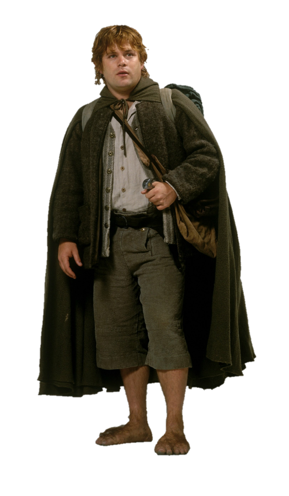
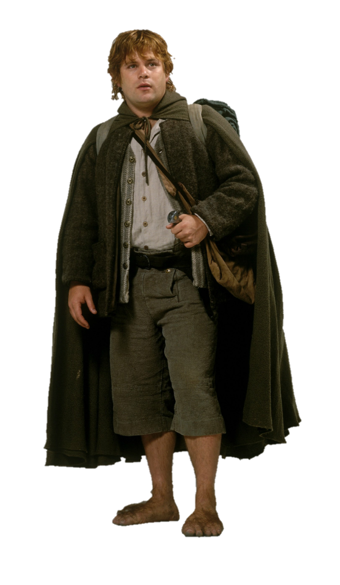

Hobbits
- Seres pequenos, menores do que os anões. Têm geralmente uma altura entre 60 centímetros e 1,20 metro - raramente atingem 1,50 metro;
- Pacíficos, gostam de comer muito, ficar em sua própria casa (parecida com uma toca) e manter uma rotina sem sobressaltos;
- Dividem-se em três raças: os pés-peludos (à qual pertencem Bilbo e Frodo Bolseiro), os Grados e Cascalvas.
 

Elfos
- Seres extremamente belos, habitantes das florestas, dotados de grande sabedoria, apego à natureza e poderes mágicos (como tornar-se invisíveis, controlar as águas, prever o futuro e ter o privilégio da vida eterna).
Anões
- Raça forte e destemida, conhecida por sua rudeza e resistência. Têm uma certa má fama entre outros povos -como os elfos- por seu excessivo apego ao ouro e às riquezas materiais. Por outro lado, são extremamente obstinados e leais aos seus princípios.